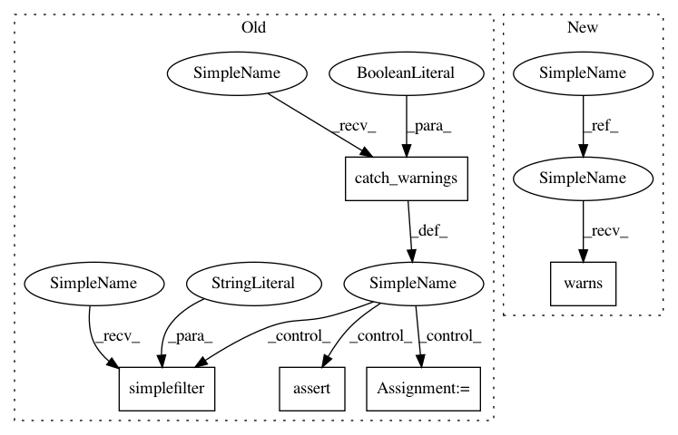

359f76af2db4d588ba2a7c99cc91d030da3948cd,lib/matplotlib/tests/test_figure.py,,test_too_many_figures,#,206
Before Change
def test_too_many_figures():
with warnings.catch_warnings(record=True) as w:
warnings.simplefilter("always")
for i in range(rcParams["figure.max_open_warning"] + 1):
plt.figure()
assert len(w) == 1
def test_iterability_axes_argument():
After Change
def test_too_many_figures():
with pytest.warns(RuntimeWarning):
for i in range(rcParams["figure.max_open_warning"] + 1):
plt.figure()
In pattern: SUPERPATTERN
Frequency: 3
Non-data size: 5
Instances
Project Name: matplotlib/matplotlib
Commit Name: 359f76af2db4d588ba2a7c99cc91d030da3948cd
Time: 2019-03-02
Author: anntzer.lee@gmail.com
File Name: lib/matplotlib/tests/test_figure.py
Class Name:
Method Name: test_too_many_figures
Project Name: matplotlib/matplotlib
Commit Name: 359f76af2db4d588ba2a7c99cc91d030da3948cd
Time: 2019-03-02
Author: anntzer.lee@gmail.com
File Name: lib/matplotlib/tests/test_figure.py
Class Name:
Method Name: test_gca
Project Name: matplotlib/matplotlib
Commit Name: 359f76af2db4d588ba2a7c99cc91d030da3948cd
Time: 2019-03-02
Author: anntzer.lee@gmail.com
File Name: lib/matplotlib/tests/test_figure.py
Class Name:
Method Name: test_too_many_figures
Project Name: matplotlib/matplotlib
Commit Name: 359f76af2db4d588ba2a7c99cc91d030da3948cd
Time: 2019-03-02
Author: anntzer.lee@gmail.com
File Name: lib/matplotlib/tests/test_ticker.py
Class Name: TestNullLocator
Method Name: test_set_params